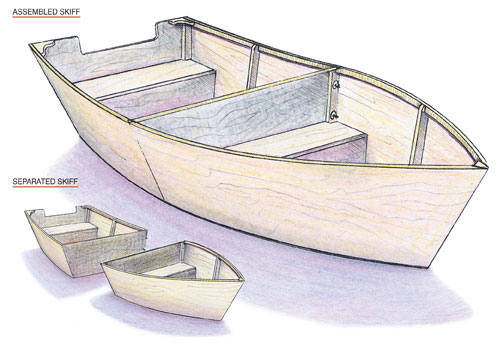
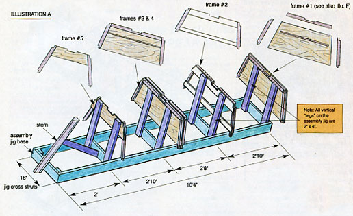
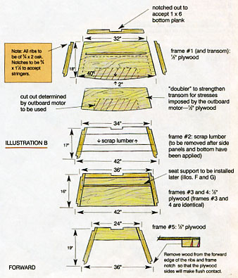
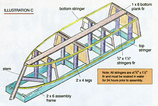
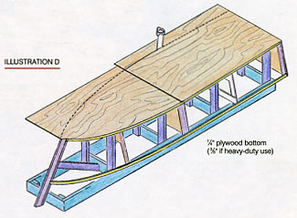
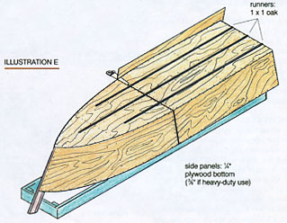
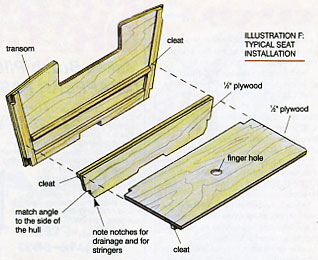
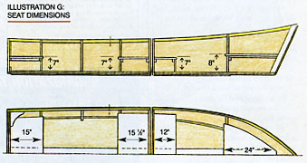
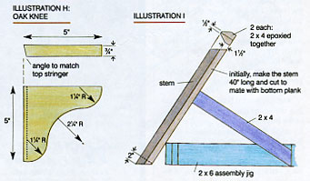

Build A Wooden Boat
Imagine building a wooden boat that is easy to build, transport and store.
By Will Shelton
June/July 2001
When my family and I packed up our posessions and moved across the country some years ao, it broke my heart to leave behind my Dad's old boat. One year, he decided to build a wooden boat as a winter project, and my brothers and I gave it quite a workout ebey summer. We rowed it, fished from it, dove off it, even sank it a couple of times, but with a fresh coat of paint each spring, it was redy for another season. That boat hosted the first outboard motor I ever used, which was quite a thrill - but I got an even bigger kick out of the boat's most unusual physical characteristic: It came in two. Dad designed it that way to fit in our small utility trailer. The boat rode in the trailer wiht its front half tucked inside its back half. When we got to the lake, we would simply bolt it together and off we would go.
When it wasn't in use, the boat rested beside the garage under a leaky tarp. As time went by, the plywood delaminated and the glue let go until it was beyond restoring. Fortunately, I took its dimensions so that I could recreate it, and now so can you.
If you use the best material to build the boat, such as stainless steel fasteners and epoxy, this little skiff will last you many years. These materials do cost a little more, but the boat will last years longer. Obtain and study literature from epoxy suppliers before beginning the project. (See sources below.)
These drawings for building a wooden boat are based on dimensions that I took from the skiff my father built. The boat from my boyhood may be long gone, but its clone has proven just as enjoyable and promises to be the center of summertime memories for years to come.
The Process
- Construct the assembly jig base; mark a center line on the 18-inch cross struts (Ill. A). All of the illustrations are in the Image Gallery at the top of the article.
- Construct the five frames, including their ribs, mark their center lines and attach a pair of legs to each frame (Ill. B).
- Bolt frames #3 and 4 together using 1/4 inch x 3 1/2 inch stainless-steel machine bolts through the six holes that will later be used to bolt the two boat halves together. Put a 1/4-inch plywood spacer between the two halves; wrap the spacer with thin plastic before bolting up (to prevent epoxy overrun from sticking to it). (Ill. A)
- Screw the two 2 x 4 legs of the assembly jig to frame #1 (transom). Drywall screws work fine for this. (Ill. A)
- Mount frame #1 to the assembly jig base by securing the 2x4 legs to the jig with screws. Make sure that the center lines match up and that the frame is square and level (Ill. A).
- Mount the legs to frame #5 and attach it to the assembly jig base. The cutouts for the bottom plank should line up and be level.
- Attach the bottom plank to frames #1 and 5 (epoxy and stainless-steel screws). It is not necessary to have the stem end of the plank shaped at this time.
- Mount frames #2, 3 and 4 in the assembly jig base (#3 and 4 are together).
- Secure them to the bottom plank, but do not use epoxy on the cross braces of frame #2.
- Build and shape the stem piece, making it longer than its final length will be (Ill. C and I ).
- Temporarily attach the stem piece to the assembly jig (off center).
- Cut the bottom plank to length relative to the intersection of the stem.
- Cut stem to length and mount to the center line.
- Temporarily attach both bottom stringers to the transom. Pull both stringers in at the same time until they touch the stem (Ill. C).
- Cut and shape the ends of the stringers until they mate properly with the stem. Cut and shape the bottom plank until it mates properly with the stringers (Ill. C). Repeat the process with the top stringers. Using screws only, attach the stringers to all of the notches in the frames.
- After the stringers have dried in place, remove the screws, apply epoxy and rescrew.
- Attach plywood bottom (Ill. D). Note that the seams butt at frames #3 and 4. Scribe bottom and cut to shape. The cut of the angle should follow the angles of the hull sides.
- Attach the three bottom runners (Ill. E).
- Attach the side panels. These can be cut in place. Leave the final shaping of the top until the boat is turned over (Ill. E).
Detaching the Boat From the Assembly Jig
- Cut the bottom plank and stringers between frames #3 and 4.
- Remove the bolts holding frames #3 and 4 together.
- Unscrew the legs from the jig (frames #1, 2 and 3).
- Lift and roll the back half over.
- Add seats (Ill. F and G).
- Add knees (Ill. H).
- Cut stem at assembly jig intersection.
- Unscrew legs from jig (frames # 3 and 4).
- Lift and roll over forward section.
- Add seats (Ill. F and G).
- Bolt halves together.
- Fair up the hull and top stringers and cut stem to length.
- Remove scrap cross braces of frame #2.
- Seal and paint.
- Add any hardware.
DIY Boat Materials List
Wood for Boat
- 1 Oak rib (3/4 inch x 2 inches x 13 feet)
- 4 Clear fir stringers (3/4 inch x 1 1/2 inch x 15 feet)
- 7 Fir cleats (seats) (3/4 inch x 1 1/2 inch x 4 feet)|
- 1 Fir bottom plank (1 inch x 6 inches x 10 feet)
- 1 Plywood sheet for frames and seats (4 feet x 8 feet x 1/2 inch)
- 4 Plywood sheets for bottom and sides (4 feet x 8 feet by 1/4 inch or 3/8 inch)
- 2 Clear fir stern (2 i nchx 4 inches x 4 feet)
Wood for Assembly Jig
- 2 Fir base (2 inches x 6 inches x 12 feet)
- 1 Fir base cross struts (2 inches x 6 i nches x 10 feet)
- 4 Fir legs (2 inches x 4 inches x 8 feet)
Other
- Epoxy
- Screws/nails (stainless or bronze)
Determine from manufacturer's information
Tools
- 3-foot level
- Hand saw
- Wood rasps: one fine, one coarse
- Drill motor
- Drill bits
- Carpenter's square
- Jig saw
- Four 6-inch C-clamps
Boat Building Sources

ILLUSTRATIONS: WILL SHELTON
This boat can be separated into two sections for easy transportation.
|

WILL SHELTON
Illustration A
|

WILL SHELTON
Illustration B
|

WILL SHELTON
Illustration C
|

WILL SHELTON
Illustration D
|

WILL SHELTON
Illustration E
|

WILL SHELTON
Illustration F: Typical Seat Installation
|

WILL SHELTON
Illustration G: Seat Dimensions
|

WILL SHELTON
Illustrations H: Oak Knee and I
|